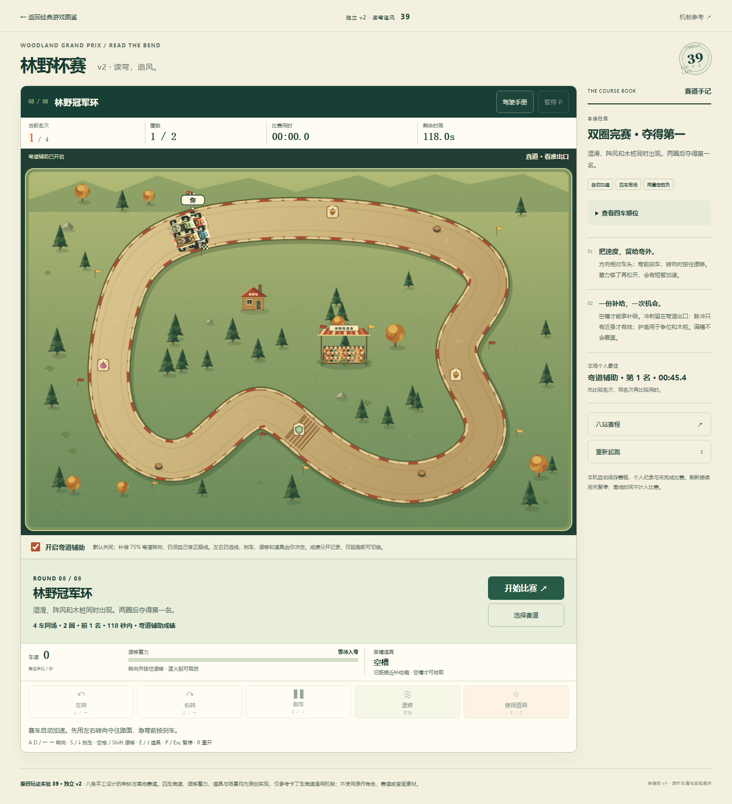
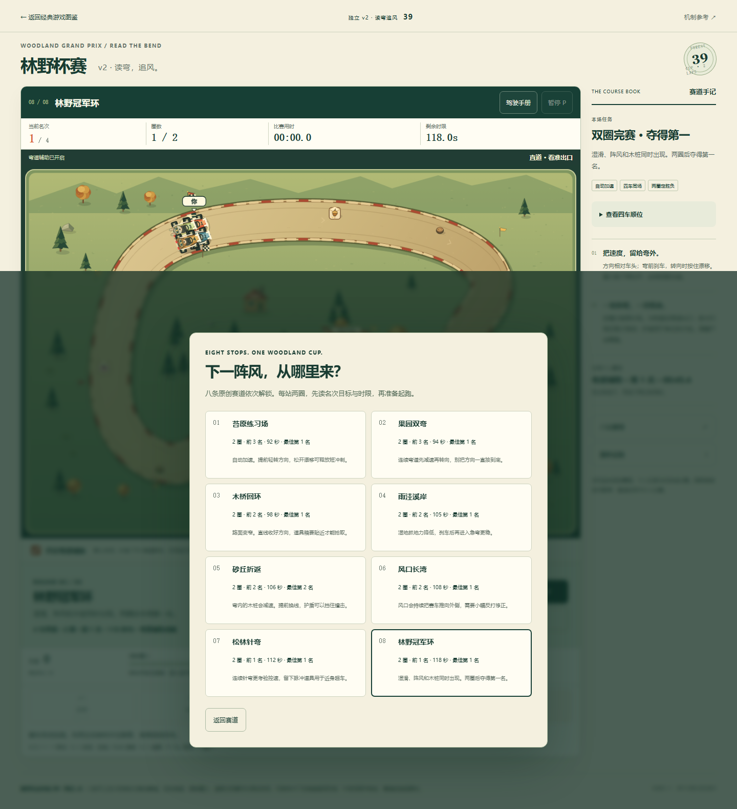
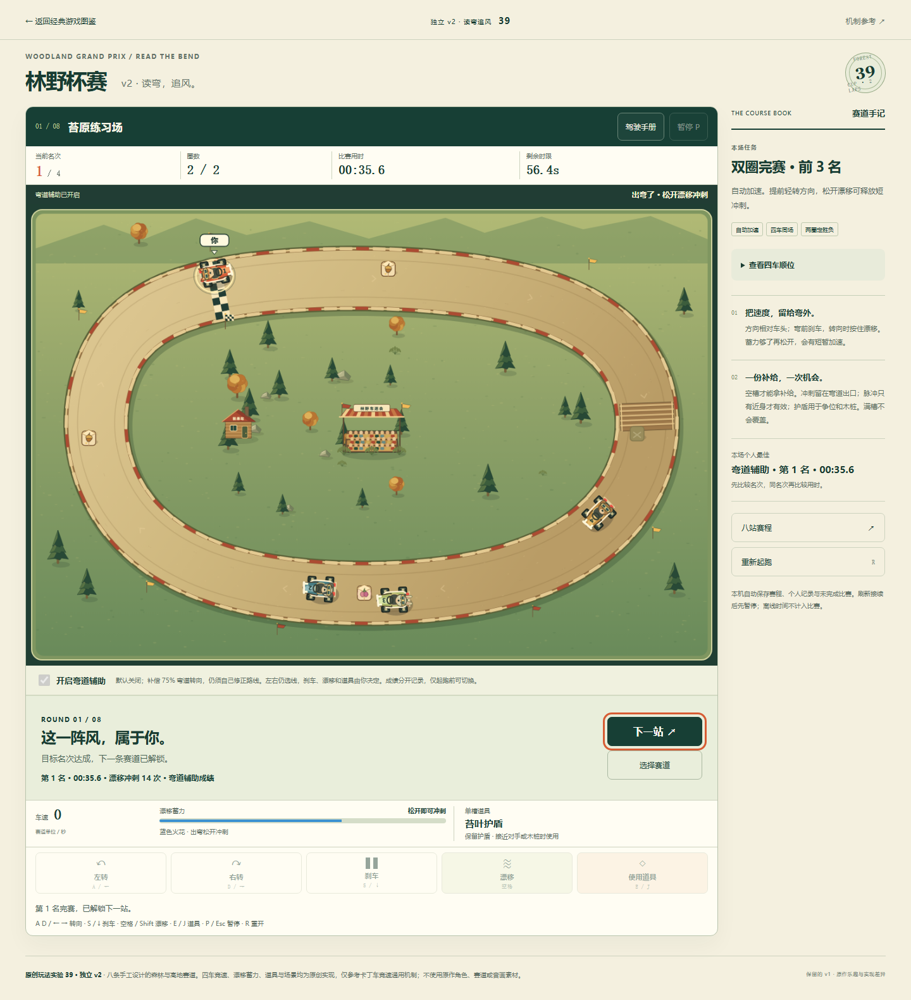
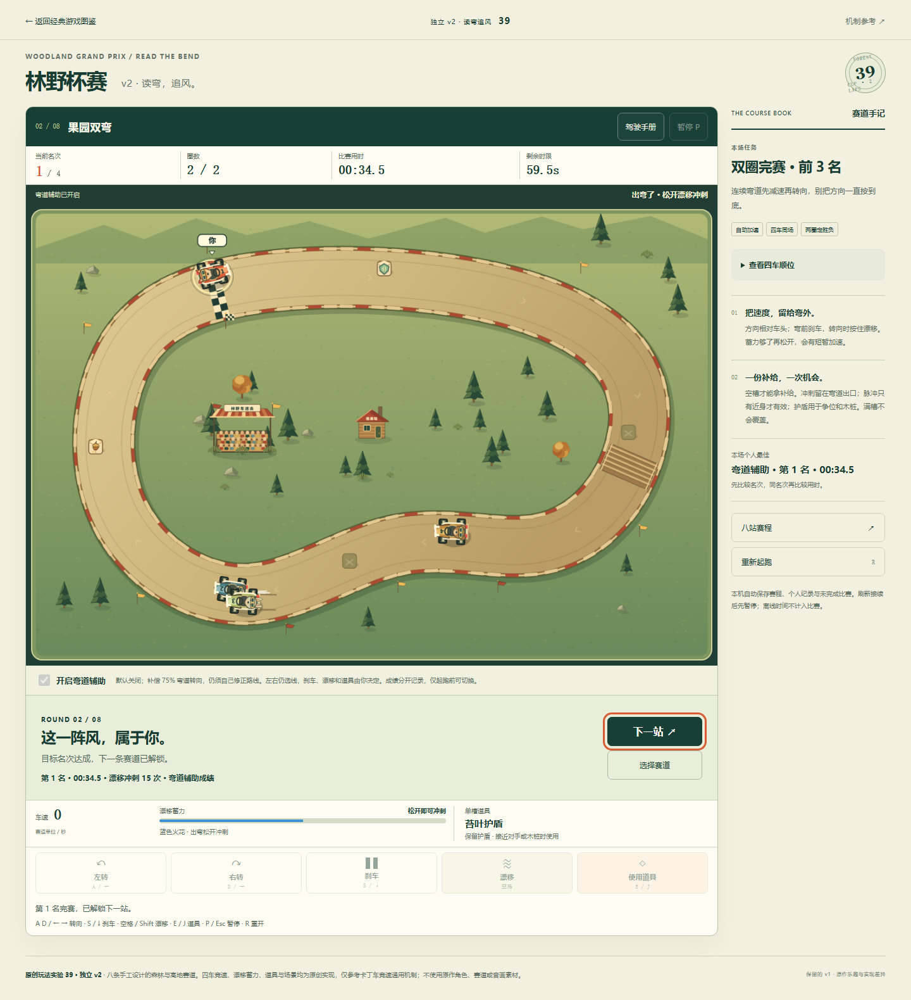
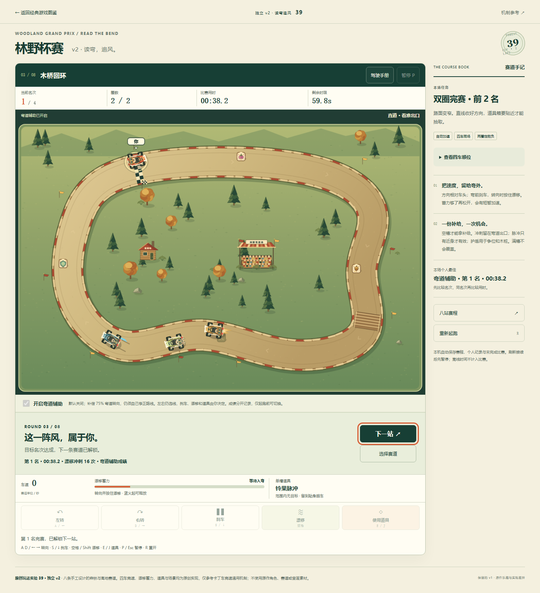
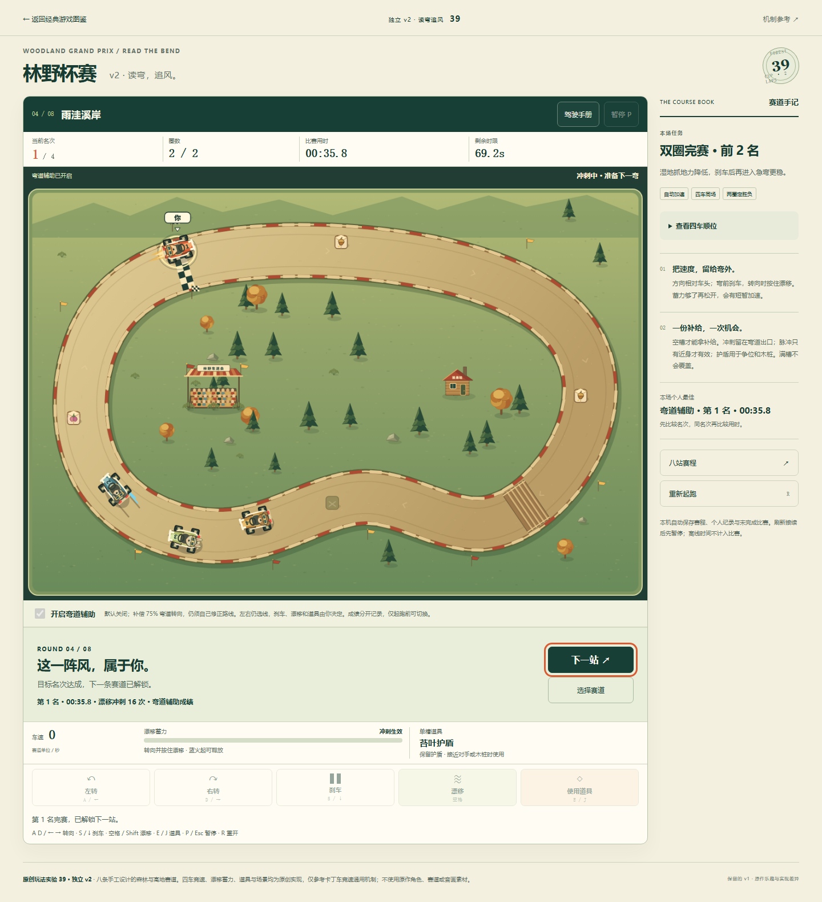
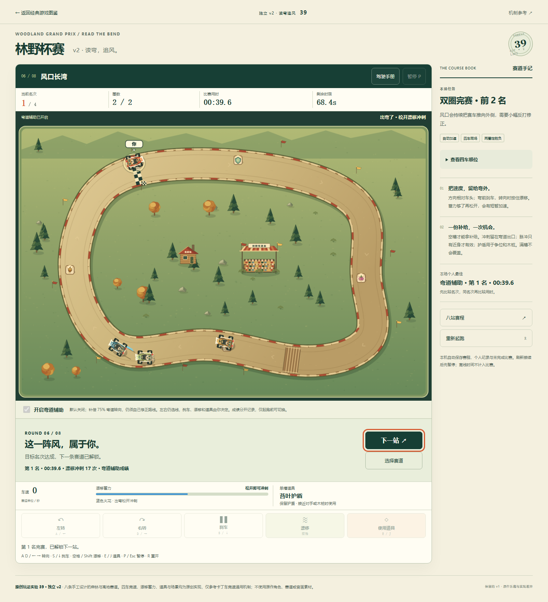
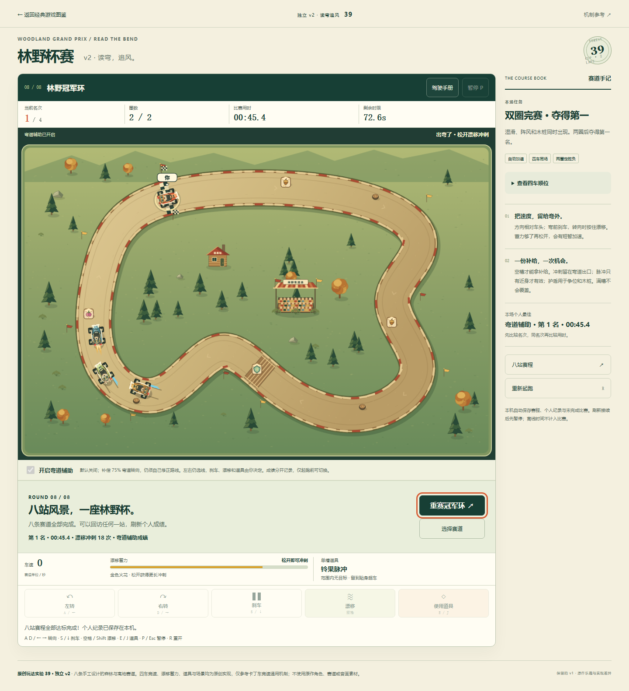

林野杯赛 v2：八赛道正常辅助完赛与冠军环
完整方法与限制 · 实际普通UI记录 · 试玩
all-eight-assisted-records-refreshed
all-eight-course-menu
course-1-attempt-1-won
course-2-attempt-1-won
course-3-attempt-1-won
course-4-attempt-1-won
course-5-attempt-1-woncourse-6-attempt-1-won
course-7-attempt-1-woncourse-8-attempt-1-won